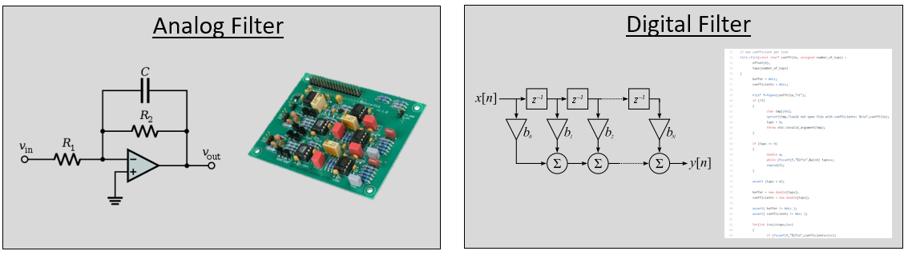
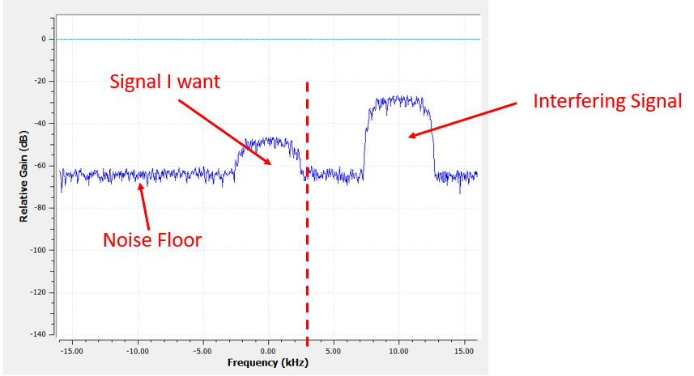
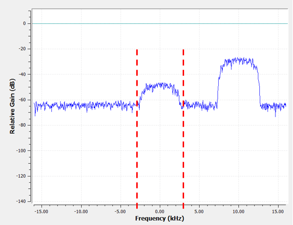
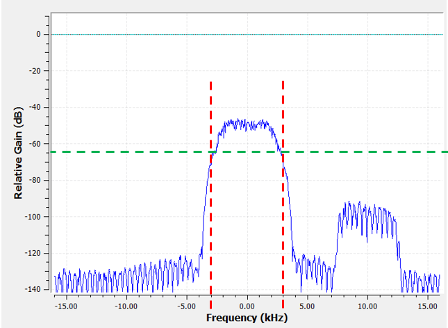
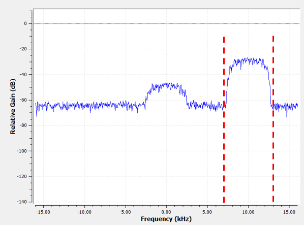
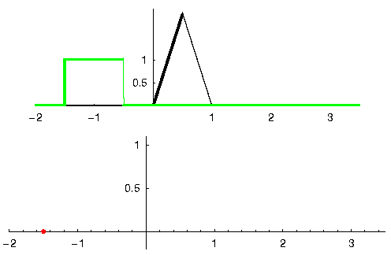
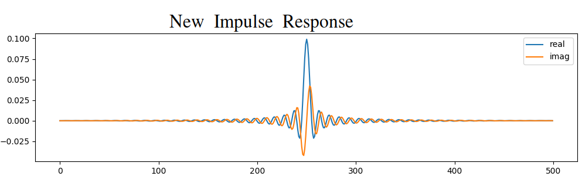
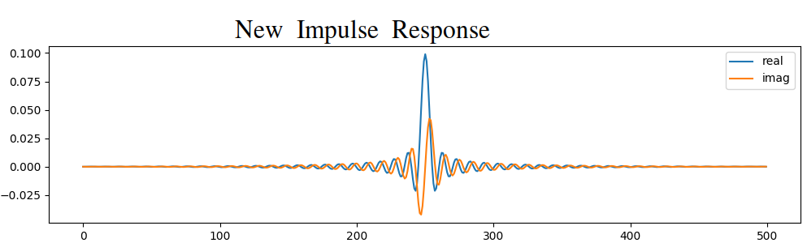
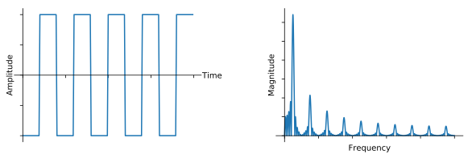

8. Filters
In this chapter we learn about digital filters using Python. We cover types of filters (FIR/IIR and low-pass/high-pass/band-pass/band-stop), how filters are represented digitally, and how they are designed. We finish with an introduction to pulse shaping, which we further explore in the Pulse Shaping chapter.
Filter Basics
Filters are used in many disciplines. For example, image processing makes heavy use of 2D filters, where the input and output are images. You might use a filter every morning to make your coffee, which filters out solids from liquid. In DSP, filters are primarily used for:
- Separation of signals that have been combined (e.g., extracting the signal you want)
- Removal of excess noise after receiving a signal
- Restoration of signals that have been distorted in some way (e.g., an audio equalizer is a filter)
There are certainly other uses for filters, but this chapter is meant to introduce the concept rather than explain all the ways filtering can happen.
You may think we only care about digital filters; this textbook explores DSP, after all. However, it’s important to know that a lot of filters will be analog, like those in our SDRs placed before the analog-to-digital converter (ADC) on the receive side. The following image juxtaposes a schematic of an analog filter circuit with a flowchart representation of a digital filtering algorithm.

In DSP, where the input and output are signals, a filter has one input signal and one output signal:
System Message: WARNING/2 ([font=\sffamily\Large\bfseries, scale=2]
\definecolor{babyblueeyes}{rgb}{0.36, 0.61, 0.83}
\node [draw,
color=white,
fill=babyblueeyes,
minimum width=4cm,
minimum height=2.4cm
] (filter) {Filter};
\draw[<-, very thick] (filter.west) -- ++(-2,0) node[left,align=center]{Input\\(time domain)} ;
\draw[->, very thick] (filter.east) -- ++(2,0) node[right,align=center]{Output\\(time domain)};)
!pdftoppm command cannot be run
You cannot feed two different signals into a single filter without adding them together first or doing some other operation. Likewise, the output will always be one signal, i.e., a 1D array of numbers.
There are four basic types of filters: low-pass, high-pass, band-pass, and band-stop. Each type modifies signals to focus on different ranges of frequencies within them. The plots below demonstrate how frequencies in signals are filtered for each type, presented first with just positive frequencies (easier to understand), then also including negative.

System Message: WARNING/2 ([font=\sffamily\Large]
\draw[->, thick] (-5,0) -- (5,0) node[below]{Frequency};
\draw[->, thick] (0,-0.5) node[below]{0 Hz} -- (0,5) node[left=1cm]{\textbf{Low-Pass}};
\draw[red, thick, smooth] plot[tension=0.5] coordinates{(-5,0) (-2.5,0.5) (-1.5,3) (1.5,3) (2.5,0.5) (5,0)};)
!pdftoppm command cannot be run
|
System Message: WARNING/2 ([font=\sffamily\Large]
\draw[->, thick] (-5,0) -- (5,0) node[below]{Frequency};
\draw[->, thick] (0,-0.5) node[below]{0 Hz} -- (0,5) node[left=1cm]{\textbf{High-Pass}};
\draw[red, thick, smooth] plot[tension=0.5] coordinates{(-5,3) (-2.5,2.5) (-1.5,0.3) (1.5,0.3) (2.5,2.5) (5,3)};)
!pdftoppm command cannot be run
|
System Message: WARNING/2 ([font=\sffamily\Large]
\draw[->, thick] (-5,0) -- (5,0) node[below]{Frequency};
\draw[->, thick] (0,-0.5) node[below]{0 Hz} -- (0,5) node[left=1cm]{\textbf{Band-Pass}};
\draw[red, thick, smooth] plot[tension=0.5] coordinates{(-5,0) (-4.5,0.3) (-3.5,3) (-2.5,3) (-1.5,0.3) (1.5, 0.3) (2.5,3) (3.5, 3) (4.5,0.3) (5,0)};)
!pdftoppm command cannot be run
|
System Message: WARNING/2 ([font=\sffamily\Large]
\draw[->, thick] (-5,0) -- (5,0) node[below]{Frequency};
\draw[->, thick] (0,-0.5) node[below]{0 Hz} -- (0,5) node[left=1cm]{\textbf{Band-Stop}};
\draw[red, thick, smooth] plot[tension=0.5] coordinates{(-5,3) (-4.5,2.7) (-3.5,0.3) (-2.5,0.3) (-1.5,2.7) (1.5, 2.7) (2.5,0.3) (3.5, 0.3) (4.5,2.7) (5,3)};)
!pdftoppm command cannot be run
|
Each filter permits certain frequencies to remain from a signal while blocking other frequencies. The range of frequencies a filter lets through is known as the “passband”, and “stopband” refers to what is blocked. In the case of the low-pass filter, it passes low frequencies and stops high frequencies, so 0 Hz will always be in the passband. For a high-pass and band-pass filter, 0 Hz will always be in the stopband.
Do not confuse these filtering types with filter algorithmic implementation (e.g., IIR vs FIR). The most common type by far is the low-pass filter (LPF) because we often represent signals at baseband. LPF allows us to filter out everything “around” our signal, removing excess noise and other signals.
Filter Representation
For most filters we will see (known as FIR, or Finite Impulse Response, type filters), we can represent the filter itself with a single array of floats. For filters symmetrical in the frequency domain, these floats will be real (versus complex), and there tends to be an odd number of them. We call this array of floats “filter taps”. We often use as the symbol for filter taps. Here is an example of a set of filter taps, which define one filter:
h = [ 9.92977939e-04 1.08410297e-03 8.51595307e-04 1.64604862e-04
-1.01714338e-03 -2.46268845e-03 -3.58236429e-03 -3.55412543e-03
-1.68583512e-03 2.10562324e-03 6.93100252e-03 1.09302641e-02
1.17766532e-02 7.60955496e-03 -1.90555639e-03 -1.48306750e-02
-2.69313236e-02 -3.25659606e-02 -2.63400086e-02 -5.04184562e-03
3.08099470e-02 7.64264738e-02 1.23536693e-01 1.62377258e-01
1.84320776e-01 1.84320776e-01 1.62377258e-01 1.23536693e-01
7.64264738e-02 3.08099470e-02 -5.04184562e-03 -2.63400086e-02
-3.25659606e-02 -2.69313236e-02 -1.48306750e-02 -1.90555639e-03
7.60955496e-03 1.17766532e-02 1.09302641e-02 6.93100252e-03
2.10562324e-03 -1.68583512e-03 -3.55412543e-03 -3.58236429e-03
-2.46268845e-03 -1.01714338e-03 1.64604862e-04 8.51595307e-04
1.08410297e-03 9.92977939e-04]
Example Use-Case
To learn how filters are used, let’s look an an example where we tune our SDR to a frequency of an existing signal, and we want to isolate it from other signals. Remember that we tell our SDR which frequency to tune to, but the samples that the SDR captures are at baseband, meaning the signal will display as centered around 0 Hz. We will have to keep track of which frequency we told the SDR to tune to. Here is what we might receive:

Because our signal is already centered at DC (0 Hz), we know we want a low-pass filter. We must choose a “cutoff frequency” (a.k.a. corner frequency), which will determine when the passband transitions to stopband. Cutoff frequency will always be in units of Hz. In this example, 3 kHz seems like a good value:

However, the way most low-pass filters work, the negative frequency boundary will be -3 kHz as well. I.e., it’s symmetrical around DC (later on you will see why). Our cutoff frequencies will look something like this (the passband is the area in between):

After creating and applying the filter with a cutoff freq of 3 kHz, we now have:

This filtered signal will look confusing until you recall that our noise floor was at the green line around -65 dB. Even though we can still see the interfering signal centered at 10 kHz, we have severely decreased the power of that signal. It’s now below where the noise floor was! We also removed most of the noise that existed in the stopband.
In addition to cutoff frequency, the other main parameter of our low-pass filter is called the “transition width”. Transition width, also measured in Hz, instructs the filter how quickly it has to go between the passband and stopband since an instant transition is impossible.
Let’s visualize transition width. In the diagram below, the green line represents the ideal response for transitioning between a passband and stopband, which essentially has a transition width of zero. The Red line demonstrates the result of a realistic filter, which has some ripple and a certain transition width.

You might be wondering why we wouldn’t just set the transition width as small as possible. The reason is mainly that a smaller transition width results in more taps, and more taps means more computations–we will see why shortly. A 50-tap filter can run all day long using 1% of the CPU on a Raspberry Pi. Meanwhile, a 50,000 tap filter will cause your CPU to explode!
Typically we use a filter designer tool, then see how many taps it outputs, and if it’s way too many (e.g., more than 100) we increase the transition width. It all depends on the application and hardware running the filter, of course.
In the filtering example above, we had used a cutoff of 3 kHz and a transition width of 1 kHz (it’s hard to actually see the transition width just looking at these screenshots). The resulting filter had 77 taps.
Back to filter representation. Even though we might show the list of taps for a filter, we usually represent filters visually in the frequency domain. We call this the “frequency response” of the filter, and it shows us the behavior of the filter in frequency. Here is the frequency response of the filter we were just using:

Note that what I’m showing here is not a signal–it’s just the frequency domain representation of the filter. That can be a little hard to wrap your head around at first, but as we look at examples and code, it will click.
A given filter also has a time domain representation; it’s called the “impulse response” of the filter because it is what you see in the time domain if you take an impulse and put it through the filter. (Google “Dirac delta function” for more info about what an impulse is). For a FIR type filter, the impulse response is simply the taps themselves. For that 77 tap filter we used earlier, the taps are:
h = [-0.00025604525581002235, 0.00013669139298144728, 0.0005385575350373983,
0.0008378280326724052, 0.000906112720258534, 0.0006353431381285191,
-9.884083502996931e-19, -0.0008822851814329624, -0.0017323142383247614,
-0.0021665366366505623, -0.0018335371278226376, -0.0005912294145673513,
0.001349081052467227, 0.0033936649560928345, 0.004703888203948736,
0.004488115198910236, 0.0023609865456819534, -0.0013707970501855016,
-0.00564080523326993, -0.008859002031385899, -0.009428252466022968,
-0.006394983734935522, 4.76480351940553e-18, 0.008114570751786232,
0.015200719237327576, 0.018197273835539818, 0.01482443418353796,
0.004636279307305813, -0.010356673039495945, -0.025791890919208527,
-0.03587324544787407, -0.034922562539577484, -0.019146423786878586,
0.011919975280761719, 0.05478153005242348, 0.10243935883045197,
0.1458890736103058, 0.1762896478176117, 0.18720689415931702,
0.1762896478176117, 0.1458890736103058, 0.10243935883045197,
0.05478153005242348, 0.011919975280761719, -0.019146423786878586,
-0.034922562539577484, -0.03587324544787407, -0.025791890919208527,
-0.010356673039495945, 0.004636279307305813, 0.01482443418353796,
0.018197273835539818, 0.015200719237327576, 0.008114570751786232,
4.76480351940553e-18, -0.006394983734935522, -0.009428252466022968,
-0.008859002031385899, -0.00564080523326993, -0.0013707970501855016,
0.0023609865456819534, 0.004488115198910236, 0.004703888203948736,
0.0033936649560928345, 0.001349081052467227, -0.0005912294145673513,
-0.0018335371278226376, -0.0021665366366505623, -0.0017323142383247614,
-0.0008822851814329624, -9.884083502996931e-19, 0.0006353431381285191,
0.000906112720258534, 0.0008378280326724052, 0.0005385575350373983,
0.00013669139298144728, -0.00025604525581002235]
And even though we haven’t gotten into filter design yet, here is the Python code that generated that filter:
import numpy as np
from scipy import signal
import matplotlib.pyplot as plt
num_taps = 51 # it helps to use an odd number of taps
cut_off = 3000 # Hz
sample_rate = 32000 # Hz
# create our low pass filter
h = signal.firwin(num_taps, cut_off, nyq=sample_rate/2)
# plot the impulse response
plt.plot(h, '.-')
plt.show()
Simply plotting this array of floats gives us the filter’s impulse response:

And here is the code that was used to produce the frequency response, shown earlier. It’s a little more complicated because we have to create the x-axis array of frequencies.
# plot the frequency response
H = np.abs(np.fft.fft(h, 1024)) # take the 1024-point FFT and magnitude
H = np.fft.fftshift(H) # make 0 Hz in the center
w = np.linspace(-sample_rate/2, sample_rate/2, len(H)) # x axis
plt.plot(w, H, '.-')
plt.show()
Real vs. Complex Filters
The filter I showed you had real taps, but taps can also be complex. Whether the taps are real or complex doesn’t have to match the signal you put through it, i.e., you can put a complex signal through a filter with real taps and vice versa. When the taps are real, the filter’s frequency response will be symmetrical around DC (0 Hz). Typically we use complex taps when we need asymmetry, which does not happen too often.
System Message: WARNING/2 ([font=\sffamily\Large,scale=2]
\definecolor{babyblueeyes}{rgb}{0.36, 0.61, 0.83}
\draw[->, thick] (-5,0) node[below]{$-\frac{f_s}{2}$} -- (5,0) node[below]{$\frac{f_s}{2}$};
\draw[->, thick] (0,-0.5) node[below]{0 Hz} -- (0,1);
\draw[babyblueeyes, smooth, line width=3pt] plot[tension=0.1] coordinates{(-5,0) (-1,0) (-0.5,2) (0.5,2) (1,0) (5,0)};
\draw[->,thick] (6,0) node[below]{$-\frac{f_s}{2}$} -- (16,0) node[below]{$\frac{f_s}{2}$};
\draw[->,thick] (11,-0.5) node[below]{0 Hz} -- (11,1);
\draw[babyblueeyes, smooth, line width=3pt] plot[tension=0] coordinates{(6,0) (11,0) (11,2) (11.5,2) (12,0) (16,0)};
\draw[font=\huge\bfseries] (0,2.5) node[above,align=center]{Example Low-Pass Filter\\with Real Taps};
\draw[font=\huge\bfseries] (11,2.5) node[above,align=center]{Example Low-Pass Filter\\with Complex Taps};)
!pdftoppm command cannot be run
As an example of complex taps, let’s go back to the filtering use-case, except this time we want to receive the other interfering signal (without having to re-tune the radio). That means we want a band-pass filter, but not a symmetrical one. We only want to keep (a.k.a “pass”) frequencies between around 7 kHz to 13 kHz (we don’t want to also pass -13 kHz to -7 kHz):

One way to design this kind of filter is to make a low-pass filter with a cutoff of 3 kHz and then frequency shift it. Remember that we can frequency shift x(t) (time domain) by multiplying it by . In this case should be 10 kHz, which shifts our filter up by 10 kHz. Recall that in our Python code from above, was the filter taps of the low-pass filter. In order to create our band-pass filter we just have to multiply those taps by , although it involves creating a vector to represent time based on our sample period (inverse of the sample rate):
# (h was found using the first code snippet)
# Shift the filter in frequency by multiplying by exp(j*2*pi*f0*t)
f0 = 10e3 # amount we will shift
Ts = 1.0/sample_rate # sample period
t = np.arange(0.0, Ts*len(h), Ts) # time vector. args are (start, stop, step)
exponential = np.exp(2j*np.pi*f0*t) # this is essentially a complex sine wave
h_band_pass = h * exponential # do the shift
# plot impulse response
plt.figure('impulse')
plt.plot(np.real(h_band_pass), '.-')
plt.plot(np.imag(h_band_pass), '.-')
plt.legend(['real', 'imag'], loc=1)
# plot the frequency response
H = np.abs(np.fft.fft(h_band_pass, 1024)) # take the 1024-point FFT and magnitude
H = np.fft.fftshift(H) # make 0 Hz in the center
w = np.linspace(-sample_rate/2, sample_rate/2, len(H)) # x axis
plt.figure('freq')
plt.plot(w, H, '.-')
plt.xlabel('Frequency [Hz]')
plt.show()
The plots of the impulse response and frequency response are shown below:

Because our filter is not symmetrical around 0 Hz, it has to use complex taps. Therefore we need two lines to plot those complex taps. What we see in the left-hand plot above is still the impulse response. Our frequency response plot is what really validates that we created the kind of filter we were hoping for, where it will filter out everything except the signal centered around 10 kHz. Once again, remember that the plot above is not an actual signal: it’s just a representation of the filter. It can be very confusing to grasp because when you apply the filter to the signal and plot the output in the frequency domain, in many cases it will look roughly the same as the filter’s frequency response itself.
If this subsection added to the confusion, don’t worry, 99% of the time you’ll be dealing with simple low pass filters with real taps anyway.
Filter Implementation
We aren’t going to dive too deeply into the implementation of filters. Rather, I focus on filter design (you can find ready-to-use implementations in any programming language anyway). For now, here is one take-away: to filter a signal with an FIR filter, you simply convolve the impulse response (the array of taps) with the input signal. (Don’t worry, a later section explains convolution.) In the discrete world we use a discrete convolution (example below). The triangles labeled as b’s are the taps. In the flowchart, the squares labeled  above the triangles signify to delay by one time step.
above the triangles signify to delay by one time step.

You might be able to see why we call them filter “taps” now, based on the way the filter itself is implemented.
FIR vs IIR
There are two main classes of digital filters: FIR and IIR
- Finite impulse response (FIR)
- Infinite impulse response (IIR)
We won’t get too deep into the theory, but for now just remember: FIR filters are easier to design and can do anything you want if you use enough taps. IIR filters are more complicated with the potential to be unstable, but they are more efficient (use less CPU and memory for the given filter). If someone just gives you a list of taps, it’s assumed they are taps for an FIR filter. If they start mentioning “poles”, they are talking about IIR filters. We will stick with FIR filters in this textbook.
Below is an example frequency response, comparing an FIR and IIR filter that do almost exactly the same filtering; they have a similar transition-width, which as we learned will determine how many taps are required. The FIR filter has 50 taps and the IIR filter has 12 poles, which is like having 12 taps in terms of computations required.

The lesson is that the FIR filter requires vastly more computational resources than the IIR to perform roughly the same filtering operation.
Here are some real-world examples of FIR and IIR filters that you may have used before.
If you perform a “moving average” across a list of numbers, that’s just an FIR filter with taps of 1’s:
- h = [1 1 1 1 1 1 1 1 1 1] for a moving average filter with a window size of 10. It also happens to be a low-pass type filter; why is that? What’s the difference between using 1’s and using taps that decay to zero?
Answers
A moving average filter is a low-pass filter because it smooths out “high frequency” changes, which is usually why people will use one. The reason to use taps that decay to zero on both ends is to avoid a sudden change in the output, like if the signal being filtered was zero for a while and then suddenly jumped up.
Now for an IIR example. Have any of you ever done this:
x = x*0.99 + new_value*0.01
where the 0.99 and 0.01 represent the speed the value updates (or rate of decay, same thing). It’s a convenient way to slowly update some variable without having to remember the last several values. This is actually a form of low-pass IIR Filter. Hopefully you can see why IIR filters have less stability than FIR. Values never fully go away!
Convolution
We will take a brief detour to introduce the convolution operator. Feel free to skip this section if you are already familiar with it.
Adding two signals together is one way of combining two signals into one. In the Frequency Domain chapter we explored how the linearity property applies when adding two signals together. Convolution is another way to combine two signals into one, but it is very different than simply adding them. The convolution of two signals is like sliding one across the other and integrating. It is very similar to a cross-correlation, if you are familiar with that operation. In fact it is equivalent to a cross-correlation in many cases.
I believe the convolution operation is best learned through examples. In this first example, we convolve two square pulses together:

Because it’s just a sliding integration, the result is a triangle with a maximum at the point where both square pulses lined up perfectly. Let’s look at what happens if we convolve a square pulse with a triangular pulse:

In both examples, we have two input signals (one red, one blue), and then the output of the convolution is displayed. You can see that the output is the integration of the two signals as one slides across the other. Because of this “sliding” nature, the length of the output is actually longer than the input. If one signal is M samples and the other signal is N samples, the convolution of the two can produce N+M-1 samples. However, functions such as numpy.convolve() have a way to specify whether you want the whole output (max(M, N) samples) or just the samples where the signals overlapped completely (max(M, N) - min(M, N) + 1 if you were curious). No need to get caught up in this detail. Just know that the length of the output of a convolution is not just the length of the inputs.
So why does convolution matter in DSP? Well for starters, to filter a signal, we can simply take the impulse response of that filter and convolve it with the signal. FIR filtering is simply a convolution operation.

It might be confusing because earlier we mentioned that convolution takes in two signals and outputs one. We can treat the impulse response like a signal, and convolution is a math operator after all, which operates on two 1D arrays. If one of those 1D arrays is the filter’s impulse response, the other 1D array can be a piece of the input signal, and the output will be a filtered version of the input.
Let’s see another example to help this click. In the example below, the triangle will represent our filter’s impulse response, and the green signal is our signal being filtered.

The red output is the filtered signal.
Question: What type of filter was the triangle?
Answers
It smoothed out the high frequency components of the green signal (i.e., the sharp transitions of the square) so it acts as a low-pass filter.
Now that we are starting to understand convolution, I will present the mathematical equation for it. The asterisk (*) is typically used as the symbol for convolution:
In this above expression, is the signal or input that is flipped and slides across  , but and can be swapped and it’s still the same expression. Typically, the shorter array will be used as . Convolution is equal to a cross-correlation, defined as , when is symmetrical, i.e., it doesn’t change when flipped about the origin.
, but and can be swapped and it’s still the same expression. Typically, the shorter array will be used as . Convolution is equal to a cross-correlation, defined as , when is symmetrical, i.e., it doesn’t change when flipped about the origin.
Filter Design in Python
Now we will consider one way to design an FIR filter ourselves in Python. While there are many approaches to designing filters, we will use the method of starting in the frequency domain and working backwards to find the impulse response. Ultimately that is how our filter is represented (by its taps).
You start by creating a vector of your desired frequency response. Let’s design an arbitrarily shaped low-pass filter shown below:

The code used to create this filter is fairly simple:
import numpy as np
import matplotlib.pyplot as plt
H = np.hstack((np.zeros(20), np.arange(10)/10, np.zeros(20)))
w = np.linspace(-0.5, 0.5, 50)
plt.plot(w, H, '.-')
plt.show()
hstack() is one way to concatenate arrays in numpy. We know it will lead to a filter with complex taps. Why?
Answer
It’s not symmetrical around 0 Hz.
Our end goal is to find the taps of this filter so we can actually use it. How do we get the taps, given the frequency response? Well, how do we convert from the frequency domain back to the time domain? Inverse FFT (IFFT)! Recall that the IFFT function is almost exactly the same as the FFT function. We also need to IFFTshift our desired frequency response before the IFFT, and then we need yet another IFFshift after the IFFT (no, they don’t cancel themselves out, you can try). This process might seem confusing. Just remember that you always should FFTshift after an FFT and IFFshift after an IFFT.
h = np.fft.ifftshift(np.fft.ifft(np.fft.ifftshift(H)))
plt.plot(np.real(h))
plt.plot(np.imag(h))
plt.legend(['real','imag'], loc=1)
plt.show()

We will use these taps shown above as our filter. We know that the impulse response is plotting the taps, so what we see above is our impulse response. Let’s take the FFT of our taps to see what the frequency domain actually looks like. We will do a 1,024 point FFT to get a high resolution:
H_fft = np.fft.fftshift(np.abs(np.fft.fft(h, 1024)))
plt.plot(H_fft)
plt.show()
See how the frequency response not very straight… it doesn’t match our original very well, if you recall the shape that we initially wanted to make a filter for. A big reason is because our impulse response isn’t done decaying, i.e., the left and right sides don’t reach zero. We have two options that will allow it to decay to zero:
Option 1: We “window” our current impulse response so that it decays to 0 on both sides. It involves multiplying our impulse response with a “windowing function” that starts and ends at zero.
# After creating h using the previous code, create and apply the window
window = np.hamming(len(h))
h = h * window
Option 2: We re-generate our impulse response using more points so that it has time to decay. We need to add resolution to our original frequency domain array (called interpolating).
H = np.hstack((np.zeros(200), np.arange(100)/100, np.zeros(200)))
w = np.linspace(-0.5, 0.5, 500)
plt.plot(w, H, '.-')
plt.show()
# (the rest of the code is the same)
 


Both options worked. Which one would you choose? The second method resulted in more taps, but the first method resulted in a frequency response that wasn’t very sharp and had a falling edge wasn’t very steep. There are numerous ways to design a filter, each with their own trade-offs along the way. Many consider filter design an art.
Intro to Pulse Shaping
We will briefly introduce a very interesting topic within DSP, pulse shaping. We will consider the topic in depth in its own chapter later, see Pulse Shaping. It is worth mentioning alongside filtering because pulse shaping is ultimately a type of filter, used for a specific purpose, with special properties.
As we learned, digital signals use symbols to represent one or more bits of information. We use a digital modulation scheme like ASK, PSK, QAM, FSK, etc., to modulate a carrier so information can be sent wirelessly. When we simulated QPSK in the Digital Modulation chapter, we only simulated one sample per symbol, i.e., each complex number we created was one of the points on the constellation–it was one symbol. In practice we normally generate multiple samples per symbol, and the reason has to do with filtering.
We use filters to craft the “shape” of our symbols because the shape in the time domain changes the shape in the frequency domain. The frequency domain informs us how much spectrum/bandwidth our signal will use, and we usually want to minimize it. What is important to understand is that the spectral characteristics (frequency domain) of the baseband symbols do not change when we modulate a carrier; it just shifts the baseband up in frequency while the shape stays the same, which means the amount of bandwidth it uses stays the same. When we use 1 sample per symbol, it’s like transmitting square pulses. In fact BPSK using 1 sample per symbol is just a square wave of random 1’s and -1’s:

And as we have learned, square pulses are not efficient because they use an excess amount of spectrum:

So what we do is we “pulse shape” these blocky-looking symbols so that they take up less bandwidth in the frequency domain. We “pulse shape” by using a low-pass filter because it discards the higher frequency components of our symbols. Below shows an example of symbols in the time (top) and frequency (bottom) domain, before and after a pulse-shaping filter has been applied:


Note how much quicker the signal drops off in frequency. The sidelobes are ~30 dB lower after pulse shaping; that’s 1,000x less! And more importantly, the main lobe is narrower, so less spectrum is used for the same amount of bits per second.
For now, be aware that common pulse-shaping filters include:
- Raised-cosine filter
- Root raised-cosine filter
- Sinc filter
- Gaussian filter
These filters generally have a parameter you can adjust to decrease the bandwidth used. Below demonstrates the time and frequency domain of a raised-cosine filter with different values of , the parameter that defines how steep the roll-off is.

You can see that a lower value of reduces the spectrum used (for the same amount of data). However, if the value is too low then the time domain symbols take longer to decay to zero. Actually when the symbols never fully decay to zero, which means we can’t transmit such symbols in practice. A value around 0.35 is common.
You will learn a lot more about pulse shaping, including some special properties that pulse shaping filters must satisfy, in the Pulse Shaping chapter.


{kind=link}
{kind=link}
{kind=link}
{kind=link}
{kind=link}
{kind=link}
{kind=link}
{kind=link}
{kind=link}
{kind=link}